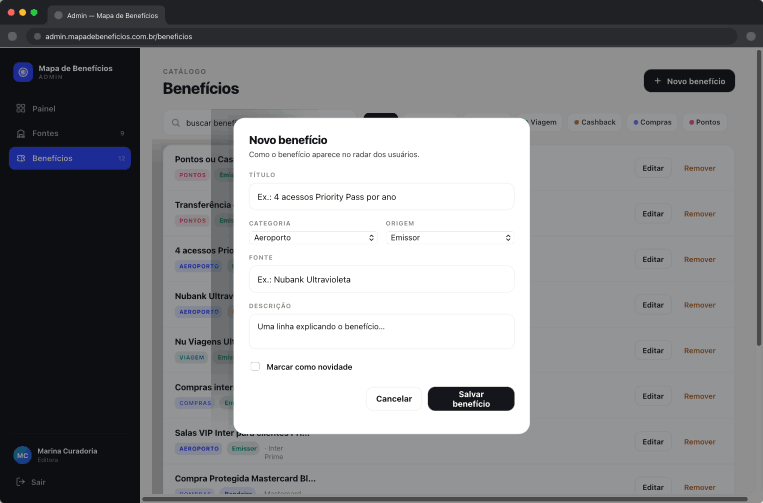
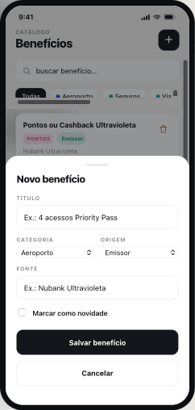

Mapa de Benefícios · Admin
Duas visões do produto, uma sobre a outra. Em cima, o Admin desktop — a curadoria do catálogo: entra pelo login, chega ao Painel e trabalha em Fontes e Benefícios, com cadastro em modais. Embaixo, a mesma curadoria em versão mobile — instalável no celular, com o mesmo fluxo em telas empilhadas. Cada card abre a tela interativa correspondente.

Mesmo padrão de modal em Programas de benefícios (nova/editar).
A mesma curadoria instalável no celular, com acesso restrito. Entra pelo login e chega ao Painel — o eixo de onde saem Fontes e Benefícios. O cadastro acontece em bottom sheets sobre cada lista. Cada card abre o Admin mobile interativo.

Mesmo padrão de sheet em Programas de benefícios (nova/editar).